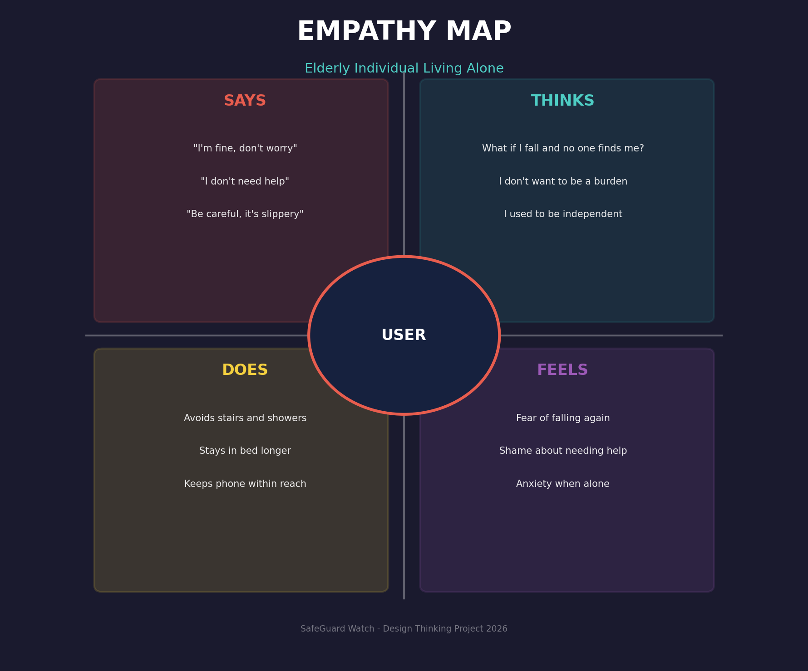
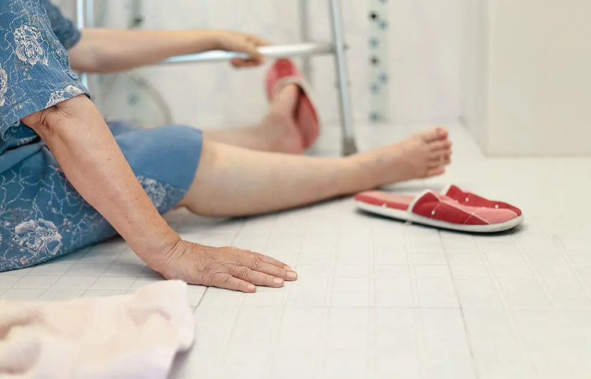

Understanding the elderly, their caregivers, and the environments where falls happen most.
We conducted interviews, observations, and secondary research to build a complete picture of the elderly fall crisis.
We identified two primary user groups that interact with this problem daily:
Living alone or with limited supervision. Experience balance issues, slower reflexes, and fear of falling. Want independence but need safety nets.
Adult children or relatives who worry constantly. Need peace of mind when they can't be physically present. Want instant alerts, not delayed notifications.
Caregivers don't just want to know a fall happened — they want to know their parent is okay EVERY day, not just during emergencies.
We created a detailed empathy map to understand what elderly individuals think, feel, say, and do.

"I don't want to be a burden." "What if I fall and no one finds me?" "I used to be independent." Fear, shame, and anxiety dominate their thoughts.
They see friends getting injured, news about elderly accidents, empty rooms when alone, and medical bills piling up after hospital visits.
Doctors warning about fall risks. Children asking them to "be careful." Neighbors sharing stories of accidents. Silent homes with no one to call.
They say "I'm fine" even when they're not. They avoid stairs, skip showers, and stay in bed longer to avoid risk — ironically weakening muscles further.
Constant anxiety that limits mobility and quality of life.
Needing help for basic tasks damages self-esteem and dignity.
Lying injured for hours before anyone discovers the fall.
Knowing help will come immediately if something happens.
Freedom to walk, shower, and live without constant fear.
Children can work and live without constant worry.
From broad research, we narrowed our focus to two critical problem areas affecting elderly safety.
Elderly individuals experience reduced balance, muscle strength, and slower reflexes, making them highly prone to falls inside the house.
Wet floors, no grab bars, and difficulty getting up after a slip.
Phone is out of reach, can't move, or too disoriented to dial.
Living alone means falls go undetected for hours or days.
Previous falls create trauma, reducing activity and strength.

Elderly individuals, especially those with memory decline, often forget essential daily tasks required for personal hygiene and wellbeing.
Forgetting to brush teeth, bathe, or wash hands regularly.
Skipping medicines, meals, and hydration leads to health decline.
Losing track of time, day, and what they already did.
Family cannot check on them regularly when living apart.
Fictional but realistic personas based on our research to guide our design decisions.
Retired Teacher | Lives Alone
Rajesh lives alone since his wife passed away. His children work in another city. He fell in the bathroom last year and fractured his hip. Now he's afraid to shower without someone nearby. He forgets his blood pressure medication often.
Working Daughter | Caregiver
Lakshmi is a working professional who checks on her father twice a day. She constantly worries about him falling when she's at work. She wants real-time alerts but doesn't want to invade his privacy with cameras.